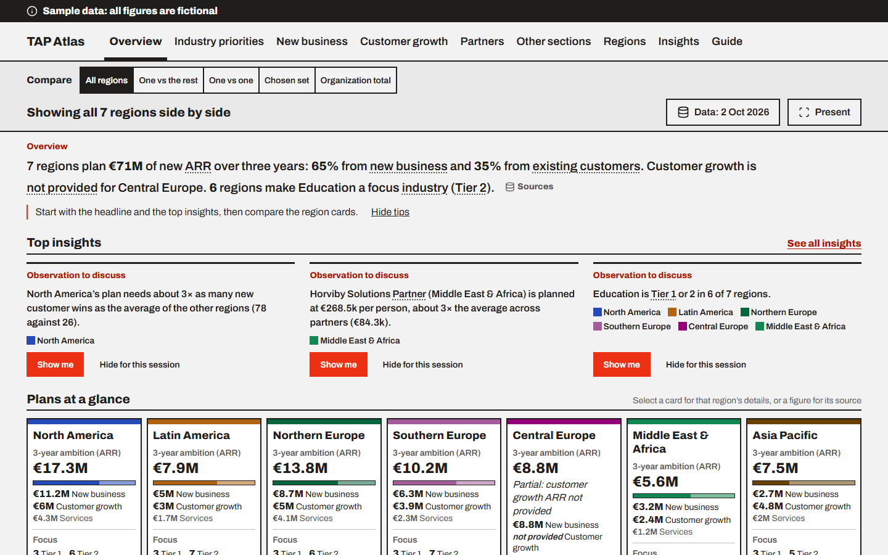
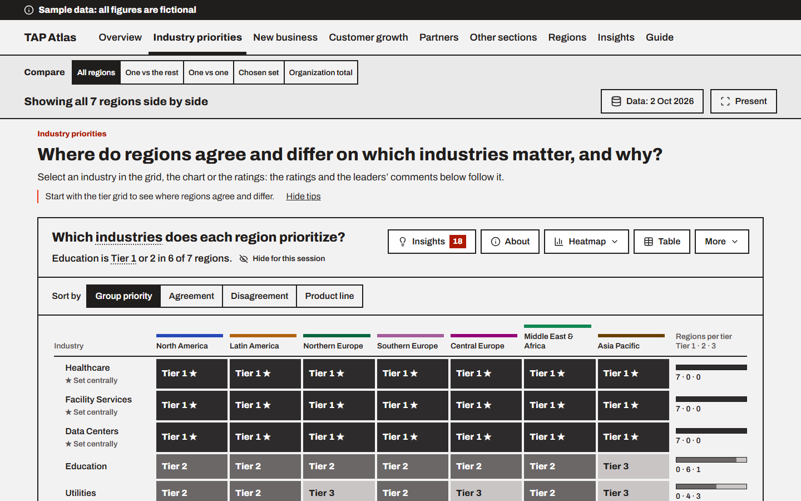
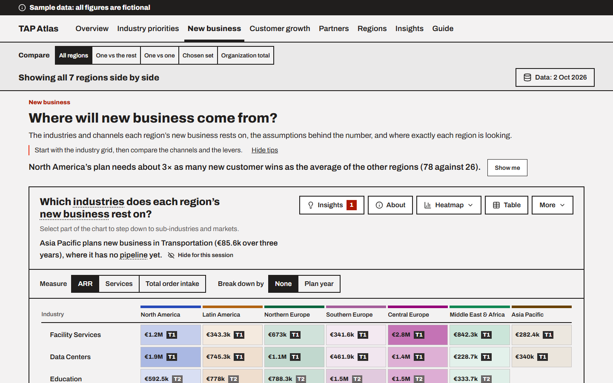
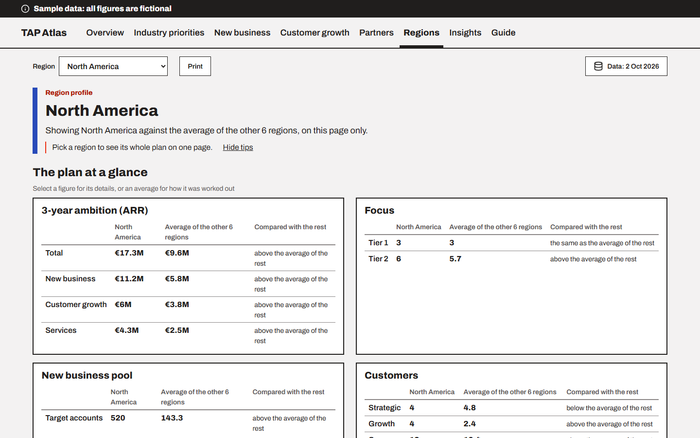

TAP Atlas
Every region's plan, side by side
A small browser app that reads the territory account plans of every region from one data file and shows them together, so leadership can play each plan back, compare regions and see what is worth discussing.
The problem
Each regional leader fills in the same planning workbook: which industries matter, where new business will come from, how existing customers will grow and which partners carry the plan. Read one at a time, the plans are hard to compare. Totals are worked out in different ways, and the interesting differences between regions get lost in the cells.
The review happens over a shared screen, so whatever shows the plans must be readable at a distance, explain itself, and say where every figure came from. The real plans are confidential: the tool must run without a server and keep real data off the web.
What the app does
- Plays back every plan in one place: an overview with the headline figures and a card per region, then views for industry priorities, new business, customer growth and partners, and a profile page per region.
- Compares once for every chart: all regions side by side, one region against the rest, two regions, a chosen set, or the organization total, with a plain sentence saying what is shown.
- Traces every figure: any number can be followed back to the file, sheet and cell it came from, and every chart has a table view.
- Points out what is worth discussing: insight rules flag observations, such as a plan that relies on many more new customer wins than its peers, worded neutrally and ranked by size.
- Built for presenting: large type, no hover-only details, no animation, keyboard steps through expanded charts, and a "Sample data" or confidentiality label on every screen.
Screens








How it was built
- No server, no build step
- Plain HTML, CSS and JavaScript opened from a folder by double-click. The chart library and fonts sit in the folder.
- One data contract
- A documented file shape is the only interface between the plans and the views. The app checks it on load and lists problems in plain words.
- Stories and test cases
- Delivered in three phases from user stories with acceptance criteria. More than 600 test cases are traced to them, and the automated ones run on every change.
- Parallel build
- Contracts fixed first, then several build streams working at once, each owning its own files, with tests written before the code.
Everything on screen comes from configuration: report definitions, insight rules, wording and the theme are separate files, so a new report or rule needs no new chart code. The public repository holds only fictional sample data, generated by a script with deliberate cases for every insight rule to find; a scan blocks any organization term from being committed.
Read the case study: the brief, the constraints, the key decisions, the delivery method and what each phase delivered.